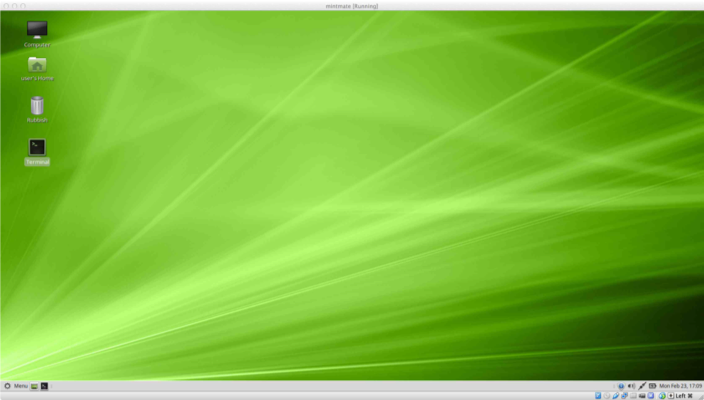

Virtual Machine Setup Guide
- CSSE3010 Linux Virtual Machine (VM) Requirements
- Install CSSE3010 VM on VMware Player Pro (Windows)
- Install CSSE3010 VM on VirtualBox (OSX or Windows)
Linux Virtual Machine Requirements
You will require at least 16GB of hard-disk space, to install the VM. The Following Virtual Machines are recommended or the following operating systems:
- Windows: VMWare Player (preferred) or Virtual Box (alternate)
- OSX: Virtual Box or VMWare Fusion
Virtual Box Installation: (Windows, OSX and Linux)
- Download the Virtual Box installer and VM disk image file (.ova). Copy both to your hard drive.
Step 1
Install virtual box and open, when installeed
Step 2
Select and drag the VM .ova file into the virtual box manager. This will create a new CSSE3010 VM.
Step 3
Double click the CSSE3010 VM icon, to start the CSSE3010 VM. This should take you to the desktop, as seen below.
Step 4
Your Virtual Machine should now boot to the deskotp.
|  |
|---|
VMware Workstation Player Installation: (Windows only)
-
Download the VMWare workshop player installer and VM disk image file (.ova).
-
You can choose to download the latest VMware workshop player/
-
Install VMWare workshop player on your laptop.
Step 1
Use the "Open a Vritual Machine" option and select the CSSE3010VMxx.ova file.
Step 2
Follow the prompts, to install the CSSE3010 VM. Set CSSE3010 to the VM name. Select ok, when encoutering warnings.
Step 3
When finished installing, double click the CSSE3010 link on the VMware workstation player, to boot the CSSE3010 VM.
Step 4
Your Virtual Machine should now boot to the deskotp.